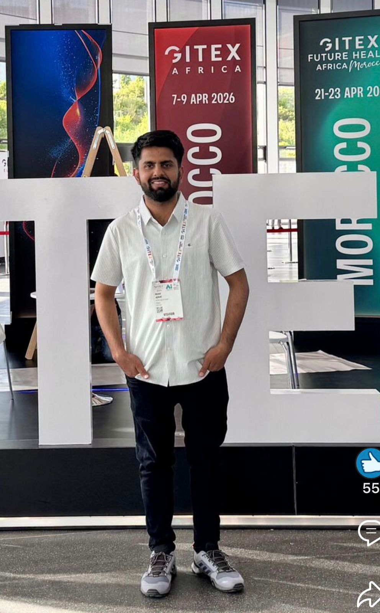
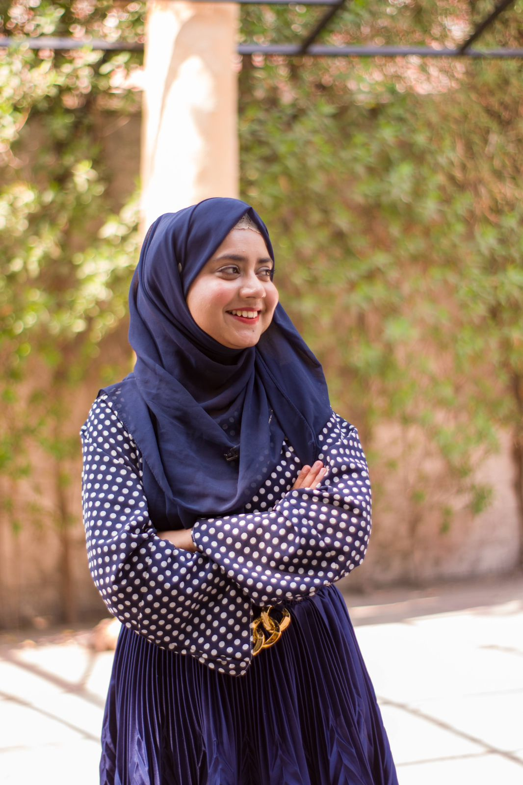

What started as an official Google Developer Student Club at NCBAE has evolved into something much greater—a dynamic, independent community of visionary builders, thinkers, and problem-solvers.
From hosting our very first coding workshops to organizing campus-wide hackathons, our journey has always been fueled by one core belief: technology is best learned together. Today, DSC NCBAE is more than just a tech society; it is a launchpad for ambition, a space for boundless curiosity, and a network of students who refuse to stop creating.
We don't just write code—we build the future. If you have the drive to learn and the passion to build, you already belong here. Because the best communities aren't simply found; they are built.

As the driving force behind our technical initiatives, Maaz ensures that every member is equipped with the skills they need to excel. From leading workshops to architecting our main projects, his passion for code is contagious.
He believes that hands-on experience is the best teacher, always encouraging peers to build, break, and learn. When he isn't debugging, he's actively mentoring juniors.

Hoorab is the creative backbone of our community, blending aesthetics with seamless user experiences. Her leadership in organizing events brings our vision to life in vibrant detail.
Whether designing interfaces or managing outreach, her dedication bridges the gap between technology and human connection. She proves that innovation is as much about design as it is about data.

Fras oversees our operational strategy, turning ambitious ideas into structured, executed realities. With a sharp eye for management, he keeps the club running efficiently and scaling new heights.
His ability to coordinate across different teams ensures that no project is left behind. A true problem-solver, Fras is always looking for the next big challenge to conquer.

Abdul-Raheem is our community architect, constantly fostering engagement and bringing new talent into the fold. His energetic approach to relationship building has expanded our reach immensely.
He champions an inclusive environment where every voice is heard and valued. Under his guidance, members find not just a tech hub, but a family of forward-thinkers.